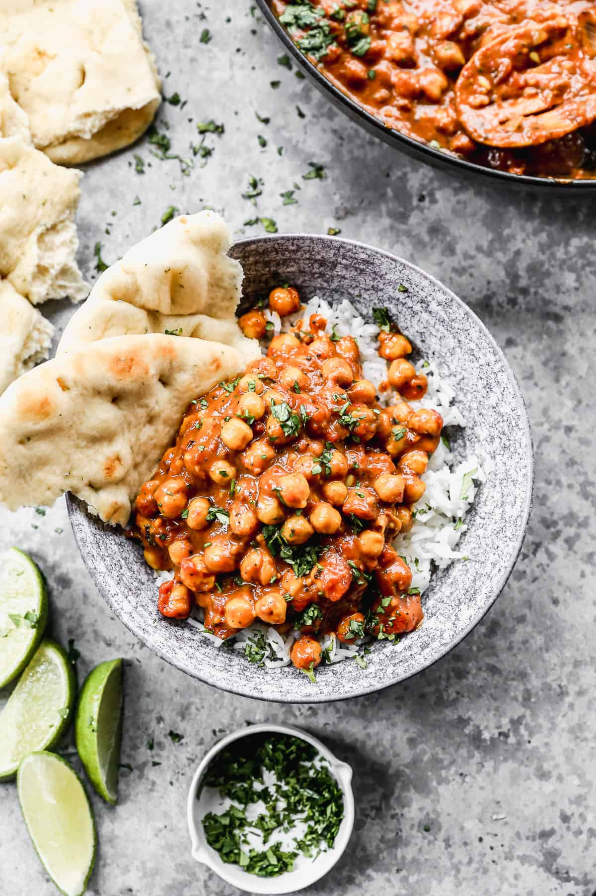

Chickpea Curry

This easy Chickpea Curry recipe is bursting with flavor and packed with vegetables, spices, and protein. It's gluten free, vegan, and plant based, and all made in just one-pot!
Ingredients
- 2 Tablespoons coconut oil, or vegetable oil
- 1 large onion, diced
- Pinch baking soda (to caramelize onions quickly)
- 4-5 cloves garlic, minced
- 2 Tablespoons fresh minced ginger
- 1 teaspoon whole cumin seeds
- 1 teaspoon mustard seeds
- 1/2 teaspoon crushed red pepper flakes
- 2 Tablespoons tomato paste
- 2 14 oz cans diced fire-roasted tomatoes, or regular diced tomatoes
- 2 teaspoons ground coriander
- 2 teaspoons garam masala
- 1 teaspoon turmeric
- 1/2 teaspoon Sea salt, or more to taste
- 2 16 oz cans chickpeas, drained and rinsed
- 1 teaspon cornstarch
- 1 13.5 oz can unsweetened coconut milk
- 1 1/2 cups chopped fresh cilantro
- fresh lime juice, of one lime
Steps
- Heat the oil in a large skillet over medium-high heat. Add onion and cook for 5 minutes, until softened. Reduce heat to medium and add a pinch of baking soda, stirring well. Cook, stirring occasionally until the onion is caramelized and browned, about 10 minutes (take your time on this step!).
- Stir in garlic and ginger and cook 30 seconds. Add mustard seeds, cumin seeds, and crushed red pepper flakes and cook for 2 minutes. Stir in tomato paste and cook for 3 minutes, stirring frequently.
- Add diced tomatoes, coriander, garam masala, turmeric, and salt, stirring to scrape up browned bits from the bottom of the pan. Add chickpeas.
- Stir cornstarch in to coconut milk and add to the pot. Stir well and simmer, uncovered, for 30 minutes.
- Meanwhile, cook rice according to package instructions.
- Taste curry and adjust seasonings as desired, if needed.
- Squeeze fresh lime juice on top. Serve over cooked basmati rice and garnish with fresh chopped cilantro and a small scoop of raita or tzatziki on the side, if desired.